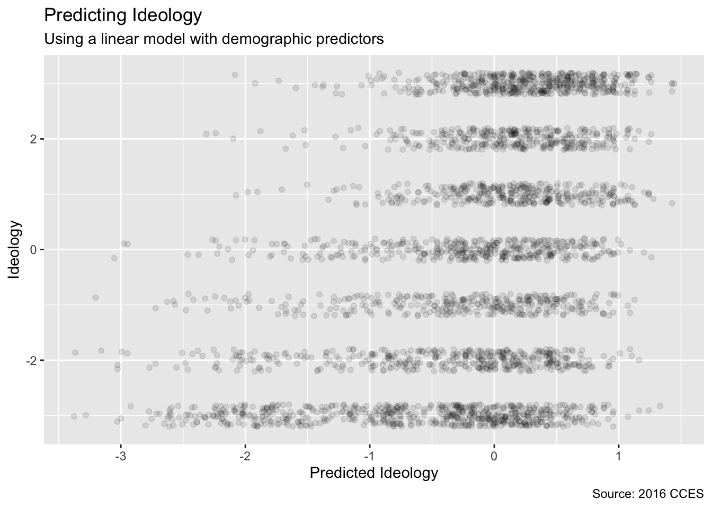

Chapter 11 Continuous Response
Chapter 10 showed us the tidymodels framework for model building and testing. In this chapter, we will use it to explore models in which the outcome variable is continuous. In Chapter 12, we learn about outcome variables which are discrete, meaning that they are members of distinct categories like TRUE/FALSE or yes/no.
We use nes from the PPBDS.data package. nes contains data from the American National Election Survey, conducted every presidential election cycle. Along with demographic details, such as race, gender, and age, the survey also contains respondents’ ideological identification. Because ideology is measured on a scale from -3 to 3, we can treat it as our continuous outcome variable.
Throughout this chapter, we seek to answer this question: Which variables are associated with one’s ideology, and how so?
11.1 Exploratory Data Analysis
Packages:
The tidymodels framework makes it easy to use functions from various different packages in constructing, fitting, and testing models.
## Rows: 38,558
## Columns: 11
## $ year <int> 1952, 1952, 1952, 1952, 1952, 1952, 1952, 1952, 1952, 1952,…
## $ state <chr> "NY", "NY", "NY", "NY", "OH", "OH", "ID", "MI", "GA", "OH",…
## $ gender <chr> "Female", "Female", "Female", "Male", "Female", "Female", "…
## $ income <ord> 68 - 95, 68 - 95, 34 - 67, 34 - 67, 0 - 16, 68 - 95, 0 - 16…
## $ age <ord> 25 - 34, 25 - 34, 25 - 34, 55 - 64, 65 - 74, 45 - 54, 65 - …
## $ education <ord> Highschool, Elementary, Highschool, Some Highschool, Highsc…
## $ race <chr> "White", "White", "White", "White", "White", "White", "Whit…
## $ ideology <int> 2, 1, 0, 3, 3, -1, 0, -2, NA, 2, -2, 3, -1, -2, 3, -2, -3, …
## $ pres_appr <chr> NA, NA, NA, NA, NA, NA, NA, NA, NA, NA, NA, NA, NA, NA, NA,…
## $ voted <chr> "Yes", "Yes", "Yes", "Yes", "Yes", "Yes", "Yes", "Yes", "No…
## $ region <fct> Northeast, Northeast, Northeast, Northeast, Midwest, Midwes…Great! Before we dive in, let’s identify the variables available to us in nes:
-
year: the year the study was conducted. -
state: abbreviation for state of residence. -
gender: identifies respondents with values “Male” and “Female”. -
race: race/ethnicity respondent identification. -
income: 5 income groups described with percentile range: 0-16, 17-33, 34 to 67, 68-95, and 96-100. -
age: ranges for respondents’ age. -
education: seven categories of educational achievement. -
pres_appr: respondents’ self-reported approval of the sitting president. -
voted: whether the respondent had voted in the presidential election. -
ideologya continuous variable with -3 corresponding to strongly Democrat and 3 corresponding to strongly Republican. -
region: US region: Northeast, Midwest, West, and South.
Given knowledge of these variables for a new person, our goal is to predict their ideology correctly.
TABLE 11.1: Data summary
| Name | nes |
| Number of rows | 38558 |
| Number of columns | 11 |
| _______________________ | |
| Column type frequency: | |
| character | 5 |
| factor | 4 |
| numeric | 2 |
| ________________________ | |
| Group variables | None |
Variable type: character
| skim_variable | n_missing | complete_rate | min | max | empty | n_unique | whitespace |
|---|---|---|---|---|---|---|---|
| state | 110 | 1.00 | 2 | 2 | 0 | 50 | 0 |
| gender | 141 | 1.00 | 4 | 6 | 0 | 3 | 0 |
| race | 287 | 0.99 | 5 | 15 | 0 | 6 | 0 |
| pres_appr | 9646 | 0.75 | 6 | 10 | 0 | 3 | 0 |
| voted | 4078 | 0.89 | 2 | 3 | 0 | 2 | 0 |
Variable type: factor
| skim_variable | n_missing | complete_rate | ordered | n_unique | top_counts |
|---|---|---|---|---|---|
| income | 2517 | 0.93 | TRUE | 5 | 34 : 11740, 68 : 9974, 0 -: 6300, 17 : 6213 |
| age | 450 | 0.99 | TRUE | 7 | 25 : 7669, 35 : 7342, 45 : 6545, 55 : 6021 |
| education | 397 | 0.99 | TRUE | 7 | Hig: 9269, Som: 8540, Col: 5540, Som: 4688 |
| region | 0 | 1.00 | FALSE | 4 | Sou: 13680, Mid: 10072, Wes: 7428, Nor: 7378 |
Variable type: numeric
| skim_variable | n_missing | complete_rate | mean | sd | p0 | p25 | p50 | p75 | p100 | hist |
|---|---|---|---|---|---|---|---|---|---|---|
| year | 0 | 1.00 | 1989.40 | 20.5 | 1952 | 1972 | 1992 | 2012 | 2016 | ▃▃▃▃▇ |
| ideology | 619 | 0.98 | -0.38 | 2.1 | -3 | -2 | -1 | 2 | 3 | ▇▂▂▂▅ |
There are three data types: factors, characters, and integers. However, income, age, and education are ordered factors. This means that each factor level is considered additively. Ordered factors can have weird effects in certain models, so we need to be wary.
There are a lot of rows in this dataset. nes covers 1954 through 2016, but for our sake, we will narrow our scope to just 2016. Because of the changing nature of what makes someone ideologically liberal or ideologically conservative over time, it is best to construct a model in which we eliminate as much of this variance as possible. Keep in mind that, when feeding in new data to our model, it is most accurately applied to voters in or around 2016.
Note that all of the variables are incomplete, meaning they contain NA values. While there are methods to impute missing data, we will simply remove these values for now.
ch11 <- nes %>%
select(year, gender, race, income, age, education, ideology, region) %>%
filter(year == 2016) %>%
drop_na()The first step in data science is to split our data set into training and testing samples, and then to create cross-validations of the training data.
set.seed(10)
ch11_split <- initial_split(ch11, prob = 0.80)
ch11_train <- training(ch11_split)
ch11_test <- testing(ch11_split)
ch11_folds <- vfold_cv(ch11_train, v = 10)We can now explore three different models for this problem: a traditional linear model, a Bayesian linear model, and a neural network.
11.2 Linear model
Create the workflow object with the model engine.
The parsnip package allows us to create an engine that can run this linear regression model easily and repeatedly. linear_reg() tells the engine that this is a linear regression. set_engine("lm") tells the engine to use the lm() function. set_mode() has two options: “regression” and “classification.” Since our left-hand variable is a continuous one, we will set it to “regression”. If it were categorical, we would set the mode to “classification”. The default is “regression,” so the set_mode() command has no effect in this case.
Add a recipe.
lm_wfl <- workflow() %>%
add_model(linear_reg() %>%
set_engine("lm") %>%
set_mode("regression")) %>%
add_recipe(recipe(ideology ~ gender + race + region +
income + age + education,
data = ch11_train)) %>%
step_dummy(all_nominal())Examine performance on the cross-validation samples.
## # A tibble: 2 x 5
## .metric .estimator mean n std_err
## <chr> <chr> <dbl> <int> <dbl>
## 1 rmse standard 2.01 10 0.0178
## 2 rsq standard 0.138 10 0.00983Check the predictions against the actual values.
lm_wfl %>%
fit(data = ch11_train) %>%
predict(new_data = ch11_train) %>%
bind_cols(ch11_train %>% select(ideology)) %>%
ggplot(aes(x = ideology, y = `.pred`)) +
geom_jitter(width = 0.2, alpha = 0.1)
11.3 Bayesian linear model
Create the workflow object with the model engine.
stan_wfl <- workflow() %>%
add_model(linear_reg() %>%
set_engine("stan") %>%
set_mode("regression"))Add a recipe.
stan_wfl <- workflow() %>%
add_model(linear_reg() %>%
set_engine("stan") %>%
set_mode("regression")) %>%
add_recipe(recipe(ideology ~ gender + race + region +
income + age + education,
data = ch11_train)) %>%
step_dummy(all_nominal())Examine performance on the cross-validation samples.
## # A tibble: 2 x 5
## .metric .estimator mean n std_err
## <chr> <chr> <dbl> <int> <dbl>
## 1 rmse standard 2.01 10 0.0178
## 2 rsq standard 0.138 10 0.00982Check the predictions against the actual values.
11.4 Neural network
Create the workflow object with the model engine.
nn_wfl <- workflow() %>%
add_model(mlp(hidden_units = 5) %>%
set_engine("nnet") %>%
set_mode("regression"))Add a recipe.
nn_wfl <- workflow() %>%
add_model(mlp(hidden_units = 5) %>%
set_engine("nnet") %>%
set_mode("regression")) %>%
add_recipe(recipe(ideology ~ .,
data = ch11_train)) %>%
step_dummy(all_nominal())Examine performance on the cross-validation samples.
## ! Fold01: internal: A correlation computation is required, but `estimate` is const...## ! Fold02: internal: A correlation computation is required, but `estimate` is const...## ! Fold03: internal: A correlation computation is required, but `estimate` is const...## ! Fold04: internal: A correlation computation is required, but `estimate` is const...## ! Fold05: internal: A correlation computation is required, but `estimate` is const...## ! Fold06: internal: A correlation computation is required, but `estimate` is const...## ! Fold07: internal: A correlation computation is required, but `estimate` is const...## ! Fold08: internal: A correlation computation is required, but `estimate` is const...## ! Fold09: internal: A correlation computation is required, but `estimate` is const...## ! Fold10: internal: A correlation computation is required, but `estimate` is const...## # A tibble: 2 x 5
## .metric .estimator mean n std_err
## <chr> <chr> <dbl> <int> <dbl>
## 1 rmse standard 2.17 10 0.0151
## 2 rsq standard NaN 0 NACheck the predictions against the actual values.
nn_wfl %>%
fit(data = ch11_train) %>%
predict(new_data = ch11_train) %>%
bind_cols(ch11_train %>% select(ideology)) %>%
ggplot(aes(x = ideology, y = `.pred`)) +
geom_jitter(width = 0.2, alpha = 0.1)
11.5 Model comparison
11.6 Cardinal virtues
11.6.1 Wisdom

Recall the first of the four Cardinal Virtues of data science. We need to carefully consider how we would like to approach our problem. In fact, what is our problem to solve?
Now that we have a left-hand variable to estimate with reasonable predictors, let’s think about a substantive question that we would like to answer this chapter. The models we will construct are predictive, not causal, and therefore can only be used for comparisons.
It is important to note that there are an infinite number of comparisons you can make. Because our model is predictive, we can only say something about the population if one variable is tweaked and all else is kept the same. For example, we could look at how education affects the self-reported ideology of Asian respondents compared to Black respondents, given that both groups of respondents are well-educated, female, middle-aged, and reside in the Northeast. Or, we could look at the interaction between gender and race and its affect on ideology for certain values of the other variables. There is no right answer as to what question is the best one to answer. Indeed, this is another important choice you will have to make as a data scientist.
11.6.2 Justice

Recall the virtue of Justice: We want to make sure our models are as just and representative of the real world as possible. As such, we will split our nes_2016 data into two sets: a training set and a testing set. We can do so using the rsample function, initial_split().
set.seed(10)
ch11_split <- initial_split(ch11)
ch11_training <- ch11_split %>%
training()
ch11_testing <- ch11_split %>%
testing()We will not be touching the testing set. The testing set can be thought of as the final test to analyze the fit of the model. Never will we use the testing set to train the model. After all, that is what the training set is for! And what exactly does training the model mean? Training is simply the process in which we take the components of the given data and create as accurate a predictive machine as possible.
We have mentioned that the following models will be predictive, not causal. Recall that all we care about in a predictive model is forecasting some value \(y_i\) given that we know \(x_{i_1}, x_{i_2}, ... x_{i_n}\). The \(y_i\) in our case is ideology. The \(x_{i_1}, x_{i_2}, ... x_{i_n}\) in this case are certain known variables, such as state, age, and income, among others. \(\beta\) stands the list of unknown parameters which must be estimated. As we will discuss in Courage, some of the inputs may not necessarily be linear and additive.
The following equation calculates the ideology of the ith respondent, \(y_i\), as a function of certain linear and/or non-linear parameters.
\[y_i = f(x_{i_1}, x_{i_2}, ..., \beta)\]
We cannot infer what would happen to someone’s ideology if their income level was within the 16th percentile, versus within the 96th percentile. The aforementioned inference would be a causal inference, which ignores the possibility that there are confounding variables. In our case, there are many possible confounding variables that are not represented, such as family socioeconomic background and immigration status.
Keep in mind that our goal is to create the best possible model to predict one’s ideology given a number of demographic variables. That is to say, we plan on re-using our model on out-of-sample data. Hence, we have set the testing set aside to serve as one instance in which to re-use our model to make predictions.
Besides the testing set, new out-of-sample data could come from other surveys that collect demographic information, or from website traffic data. These data most likely will not contain information on whether the respondent approves of the president or whether they voted in the presidential election. In order for our model to be relevant to our question, we will assume that new data will not provide pres_appr and voted. When defining our formula later on, we will keep this in mind.
An example Preceptor Table that would answer our guiding question would look something like this.
| Name | Covariates | Outcomes | |||||
|---|---|---|---|---|---|---|---|
| Age | Region | Gender | Income | Education | Race | Ideology | |
| Alex | 17-24 | Midwest | Male | 34 - 67 | College | White | ? |
| Betty | 55-64 | Northeast | Female | 34 - 67 | College | White | -2 |
| ... | ... | ... | ... | ... | ... | ... | ... |
| Carl | 35-44 | West | Male | 34 - 67 | College | White | ? |
| Diane | 17-44 | South | Female | 34 - 67 | College | White | 1 |
We can preliminarily explore our guiding question by plotting age against average ideology, faceting by region.
ch11_training %>%
group_by(age, region) %>%
mutate(avg_ideo_by_age = mean(ideology)) %>%
ggplot(aes(x = avg_ideo_by_age, y = age)) +
geom_point() +
facet_wrap(~region) +
geom_vline(xintercept= 0, color = "red", linetype = "dotted")The Northeast, Midwest, and West all skew politically liberal in terms of average ideology per age group. Most notably, not a single age group in the Northeast had a positive average ideology; the most conservative age group is the 55-64 year old group. Meanwhile, in the West and the Midwest, there are clear trends that older age groups tend to have a more conservative average ideology. In contrast, every age group’s average ideology skewed politically conservative in the South save for the 35-44 year olds.
Why can’t we just stop our analysis here? Well, our main question involves predicting the ideology of new people, which a visualization cannot tell you. There are many other factors at hand besides age that influence ideology. In order to answer our question for a subset of the population, we need to keep these factors constant among said subset. For example, if we are interested in the effect of age on ideology by region, we must specifically look at folks who have the same education, income, race, and gender, with different ages and regions.
11.6.3 Courage

We will be using three different engines as models: lm, stan, and nnet. We will be using lm to fit a standard linear regression and stan to fit a Bayesian linear regression. You have encountered these two engines in previous chapters in the form of the functions lm() and stan_glm(). The last engine is based on multilayer perceptron neural networks, a supervised machine learning process in which data can be evaluated non-linearly.
11.6.4 Temperance

By now, we have created three different linear regression models: one using the lm engine, one using the Bayesian stan engine, and one using the machine learning nnet engine. We have also explored K-fold cross-validation to verify the fit of the model on out-of-sample data. Lastly, we’ve seen how variable selection can change our models.
So many options! How do we choose which model is the best?
First, we should only favor more complex models (or formulas) if the additional complexity is warranted. This is a philosophical principle known as “Occam’s Razor.” It states that, “all other things being equal, simpler solutions are more likely to be correct than complex ones.” When viewed in a modeling framework, Occam’s Razor can be restated as, “all other things being equal, simpler models are to be preferred over complex ones.” In other words, we should only favor the more complex model/formula if the additional complexity is warranted.
Secondly, we have two quantitative metrics to help guide our decision: the rmse and rsq values. Lower rmse values are more desired because they indicate a higher accuracy in predicting the outcome variable. Higher rsq values are better because that means that more of the variation in the dataset can be explained by the predictor variables in the formula.
However, remember that rmse and rsq values are not end-all-be-all. There are other ways to to determine the best model: Did it predict low ideologies well? What about high ideologies? Did it do a good job of generally sorting people into the right end of politically liberal or politically conservative? Were there frequent outlandish answers generated, such as a quantity of ideology too high to exist?
Indeed, even the rmse value’s validity can be up for debate, as it takes the mean squared error. Why not take an absolute value so that larger differences do not seem even larger after getting squared? These are questions you should be asking when relying on a metric to compare models.
Let’s loop back to the original guiding question. How does age affect ideology for respondents from different regions?
Assume that the segment of the population we are interested in is college educated men making an average income. These are vital assumptions to make, as without setting baselines for the other predictor variables, we cannot make any comparisons on region and age.
Say we are specifically interested in the different effects of ages on college-educated men in the Northeast versus the South. Let’s use our second model, stan_model, to explore this problem.
First, create a tibble in which all respondents are college-educated white men making average income. Half of the group will be from the Northeast, and half from the South.
wrap_up <- tibble("region" = as.factor(c("Northeast", "South", "Northeast", "South",
"Northeast", "South", "Northeast", "South",
"Northeast", "South", "Northeast", "South",
"Northeast", "South")),
"gender" = as.factor(c("Male", "Male", "Male", "Male",
"Male", "Male", "Male", "Male",
"Male", "Male", "Male", "Male",
"Male", "Male")),
"income" = as.factor(c("34 - 67", "34 - 67", "34 - 67", "34 - 67",
"34 - 67", "34 - 67", "34 - 67", "34 - 67",
"34 - 67", "34 - 67", "34 - 67", "34 - 67",
"34 - 67", "34 - 67")),
"age" = c("17 - 24", "17 - 24", "25 - 34", "25 - 34",
"35 - 44", "35 - 44", "45 - 54", "45 - 54",
"55 - 64", "55 - 64", "65 - 74", "65 - 74", "75 +", "75 +"),
"education" = c("College", "College", "College", "College", "College", "College", "College", "College", "College", "College", "College", "College", "College", "College"),
"race" = c("White", "White", "White", "White", "White", "White", "White", "White", "White", "White", "White", "White", "White", "White"))Next, obtain the ideology values by fitting like we did before:
11.7 Summary
Page built: 2020-11-07